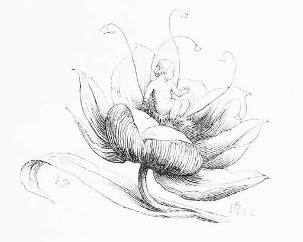
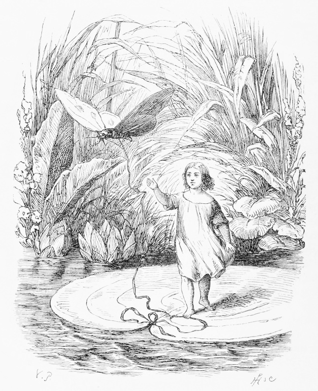
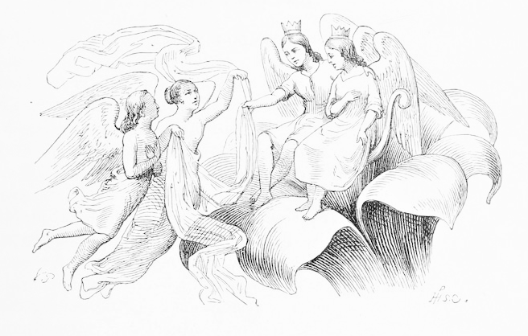

むかし、一人の女の人がいました。その女の人はかわいい子どもをさずかりたいと思っていました。けれども、
女の人は言いました。「かわいい子どもがほしいのです。どうしてもほしいのですが、どうにもならないのです。どうすれば子どもが出来るのですか。」
すると、魔法使いのおばあさんは答えます。「ふぉっ、ふぉ。そんなことはたやすいことよ。ごらんあれ、ここに一つぶの大麦がある。これをそんじょそこらの大麦と思いなさんな。畑にまく麦や、ニワトリに食べさせる麦とは別物じゃ。特別な大麦だよ。これをな、植木ばちの中に植えるのじゃ。すると、何かが起こるはずじゃよ。ふぉっ、ふぉ。」
それを聞いて女の人は、「その大麦をわたしにください。」とたのみました。
「しかし、これは銀貨十二枚ないとわたせんよ。それでもよいのかな？」と、魔法使いのおばあさんがたずねると、女の人はこくりとうなずきました。おばあさんは大麦を女の人の手の中ににぎらせました。
「ありがとうございます。」と、女の人はお礼を言って、魔法使いのおばあさんに銀貨を十二枚わたしました。
女の人は家に急いで帰りました。帰るなりさっそく植木ばちを出してきて、中に麦を植えました。女の人はじっと植木ばちを見つめて、何が起こるか待っていました。
「いったいどうなるのかしら。」と女の人が考えていると、おどろいたことに土の中がもぞもぞ動いていました。
女の人はその後もじっと見つづけていましたが、なかなか花が咲かないのに気づくと、ため息をつきました。
「それにしても、きれいなお花ね。」と、女の人は言って、赤い花びらにキスをしました。
花びらはきらきら光っていました。女の人がなんどもなんどもキスをすると、ぱっと花が

女の人はチューリップを見て首をかしげていると、花の真ん中に人がいることに気がつきました。つやつやした緑色のおしべにかこまれて、とても小さな女の子がかわいらしく座っていたのです。女の子はおやゆび半分の大きさしかありませんでした。あまりにも小さいので、女の子は『おやゆび
おやゆび姫は女の人にゆりかごをもらいました。きれいにみがかれたクルミのからの上に、スミレの花びらをシーツ、バラの花びらをしきぶとんにしたきれいなゆりかごです。お月さんが出ている間にはそこで寝て、お日さまが出ている間はテーブルの上で遊んでいました。テーブルの上に、女の人が用意してくれたお皿がありました。水がいっぱい入っていて、お皿のふちをお花の
お皿の中では、おやゆび姫は大きなチューリップの花びらがボートがわりです。白鳥の毛で作ったオールを二本使って、花のボートをこいでいました。左右にゆらゆらゆれて、ボートの上から見える
ある夜のことでした。おやゆび姫がかわいいベッドの上でぐっすりねむっていると、大きなヒキガエルが一ぴき、部屋の中に入ってきました。みにくく、じめじめしたヒキガエルです。われた
「かわいい子だわさ。息子のおよめさんにちょうどいいだわさ。」と、ヒキガエルは言って、おやゆび姫がねむったままのクルミのからを持ちあげました。そのままヒキガエルは窓から庭に飛び下りて、家からはなれていきました。
浅い小川の岸に、ぬまになっているところがありました。そこにヒキガエルはむすこといっしょに住んでいました。むすこガエルは母ガエルよりもっとみにくくて、きれいなベッドにねているおやゆび姫を見ても、「ゲーコ、ゲーコ、ゲーコ。」と鳴くだけでした。
それを聞いた母ガエルは、「大きな声を出さないで、起きてしまうだわさ。」とむすこガエルを注意しました。「起きれば、この子は白鳥のわた毛みたいに軽いから、うっかりするとふわふわと逃げてしまうんだわさ。小川にハスのはっぱがあっただわさね。その上に乗せるだわさ。軽いし、小さいからあの子にとっては島みたいなものだわさ。逃げられないんだわさ。そうやって動けないようにしておいて、私たちは急いで部屋をこしらえなくちゃだわさ。あんたたち二人が
小川の底からたくさんのハスが生えていました。ぶあつい緑のはっぱが水面近くについていたので、水面に浮かんでいるように見えました。いちばん遠いところにあるはっぱが、いちばん大きいはっぱでした。母ガエルがクルミのからを持ってそこへ泳いでいきました。クルミのからの中でおやゆび姫はまだねむったままでした。
朝早く、おやゆび姫は目をさまして、自分がどこにいるか気づくと、わんわんとはげしく泣きだしました。家でねていたと思っていたのに、小川に浮いた大きな緑のはっぱの上にいたのですから。どこを見てもまわりは水ばかりで、どうやってここにいるのかわかりませんでした。
一方、母ガエルはぬま地の中にいました。部屋の中をアシと黄色いスイレンの花でかざるのにてんてこまいでした。新しいむすめとなる女の子のために、部屋をきれいにしておきたいのです。母ガエルはかざり終えると、みにくいむすこを連れて、はっぱの上に一人でいるかわいそうなおやゆび姫のもとへ泳いでいきました。おやゆび姫のきれいなベッドを取って来て、新しい花よめに用意された寝室に置くためです。母ガエルは水の上のおやゆび姫におじぎして言いました。「こいつが私のむすこだわさ。あんたのおむこになるんだわさ。この小川のぬま地で幸せに暮らすんだわさ。」
「ゲーコ、ゲーコ、ゲーコ。」とだけしか、むすこガエルは言えません。仕方がないので母ガエルはきれいなベッドを持ち上げて、そのまま泳いでいってしまいました。おやゆび姫はまたひとりぼっちになりました。緑のはっぱの上に座ってしくしく泣きました。あのヒキガエルとみにくいむすこガエルのおむこさんといっしょに住むなんて、考えるだけでがまんなりません。その一部しじゅうをメダカたちが水の中で泳ぎながら聞いていました。メダカたちはおやゆび姫を見てみようと水面に頭を出しました。見たとたん、美しさに心を打たれてしまいました。こんな子がみにくいヒキガエルたちと暮らすなんてあんまりだ、とメダカたちは思いました。「だめだ。そんなことをさせてなるもんか！」メダカたちははっぱのくきのまわりに集まりました。上には、おやゆび姫が座っています。みんないっせいに根もとをガリガリかじりました。ずっとガリガリかじり続けていると……ついに、メダカたちはくきをかみ切ったのでした。はっぱはフワッと水面に落ちて、川を流れていきます。おやゆび姫はどんどん岸から遠ざかっていきました。
ゆらゆらゆられて、おやゆび姫はいくつもの場所を通りすぎました。林の中にいた小鳥たちはおやゆび姫を見て、「なんてかわいいおじょうさんだ。」と、さえずりました。おやゆび姫は、はっぱに乗ってどんどん流されていき、ついによその国へ来てしまいました。

そこへきれいなモンシロチョウが一羽現れて、ひらひらひらひらおやゆび姫のまわりをしきりに飛びました。しばらく飛びつづけたあと、はっぱの上にとまりました。おやゆび姫とモンシロチョウはいっしょに川を流れていきました。もうヒキガエルにつかまる心配はありません。見えるのはいい景色だけでした。おやゆび姫はだんだん楽しくなってきました。
水面が日光にてらされて、金色にきらきらかがやいていました。おやゆび姫は
やがて、大きなコガネムシが飛んできました。コガネムシはおやゆび姫を見つけるやいなや、前足で細い腰をぐっとつかみ、木の上まで連れていってしまいました。緑のはっぱはモンシロチョウと小川を下っていきました。モンシロチョウはしっかりと結ばれていたので逃げられなかったのです。
おやゆび姫はコガネムシにさらわれて、とてもこわかったことでしょう。でも、それよりもあやまりたい気持ちでいっぱいでした。はっぱにきれいなモンシロチョウをくくりつけてしまったからです。自分でリボンを外せなければ、きっとはらぺこで死んでしまうにちがいありません。コガネムシはそんな気持ちをおかまいなしに、おやゆび姫を木の中でいちばん大きなはっぱの上に乗せました。花のミツを取ってきて、食べさせてくれました。
「かわいいじゃん、かわいいじゃん。コガネムシには見えないけれど、かわいいじゃん。」と、コガネムシは言いました。
しばらくすると、木にいるコガネムシがみんなやってきました。しかし、いっせいに触角をぴくっと立てて、口々にこう言いました。
「この子、足が二本しかないじゃん！ すげぇ変じゃん。」
「触角がないじゃん。」
「身体が細すぎるじゃん。へぇん！ 人間みたいじゃん。」
コガネムシの奥さんは「ふん！ この子ブスねぇん。」と、口をそろえて言います。でも、だれがなんと言おうと、おやゆび姫はとてもかわいいのです。おやゆび姫をさらってきたコガネムシだって、今の今までそう思っていました。なのに、あまりにもみんながみにくいみにくいとはやし立てたので、このコガネムシまでおやゆび姫がみにくいと思ってしまいました。コガネムシはどうしようもなくなって、「おまえなんかどこへでも勝手に行っちゃえばいいじゃん。」と、言いました。おやゆび姫をつまんで木から飛びおりると、ヒナギクの花の上にちょこんと乗せて帰ってしまいました。おやゆび姫はめそめそ泣いていました。コガネムシとお友達になれないほど、自分はみにくいのかと思いました。なみだが止まりませんでした。でも、おやゆび姫はバラの花びらのようにおしとやかでやさしく、この世の中でいちばん愛らしい人間なのです。
かわいそうに、おやゆび姫は夏のあいだ、ずっとひとりぼっちでした。広い森の中、ひとりぼっちでした。大きなスカンポの葉の下に、草のくきでベッドをこしらえて、雨つゆをしのいでいました。おやゆび姫は食べ物のかわりに花のミツをすい、毎朝はっぱから落ちるしずくでのどをうるおしていました。こんな毎日がすぎていき、夏も秋も終わってしまい、ついに冬がやってきました。長く、寒い冬です。甘くさえずっていた鳥たちもみんな飛びさり、木もかれ、花もしおれてしまいました。今まで住んでいた大きなクローバーの葉さえも、くるくると丸まって、かさかさにしなびて、黄色くしおれたくきだけしか残りませんでした。おやゆび姫の服も穴があいてぼろぼろになっていました。寒くて、がたがたとふるえました。なんといっても小さくてかよわいので、あつさや寒さにとてもびんかんなのです。寒くて寒くて、こごえ死にそうでした。ついに雪までも降ってきました。ひらひらとゆっくり降っていました。でも、雪のかけらがひらひら降ってくるのは、小さなおやゆび姫にとってはシャベル一杯分の雪を頭の上に落とされたと同じなのです。なぜなら私たちには背がそれなりにありますが、おやゆび姫は背がおやゆびくらいしかないからです。おやゆび姫はかれたはっぱにくるまりましたが、真ん中にひびが入っていてすきまからぬくもりが逃げていきます。寒さにふるえていました。
話は変わって、おやゆび姫が住んでいた森のそばに大きな麦畑が広がっていました。麦はとっくにかり取られていました。ただ、かさかさになった麦のきりかぶだけ、野ざらしになって氷の張った地面に立っていたのです。おやゆび姫は麦のきりかぶの中を歩きました。でも、おやゆび姫にとってはきりかぶも大きな森です。通っていくのにも、大変な苦労をしなければなりませんでした。歩いている間も、寒くて寒くてどうしようもありません。
やがて、おやゆび姫は野ネズミの家の
野ネズミは穴から顔を出し、おやゆび姫を見ると、「こりゃあ、ふびんなむすめさんじゃ。」と言いました。この野ネズミは人のいいおばあさんネズミでした。「さぁ、ぬくとい部屋にお上がりよ。ごはんをいっしょに食べましょう。」
野ネズミはおやゆび姫がとつぜん来たにもかかわらず、とても喜びました。そして、こう言いました。
「よかったら、この冬が終わるまでここにいなさいな。大歓迎よ。その間、ただわたしの部屋をきれいにせいりせいとんして、おそうじしてくれるだけでいいんじゃよ。あと、お話をわたしに聞かせてくれんかね。わたしは人の話を聞くのが大好きなんじゃ。」おやゆび姫はおん返しのつもりで、野ネズミからたのまれたことは何でもこなしました。そしておやゆび姫は、楽しい毎日を送っていったのです。
ある日、野ネズミは、「近いうちにお客さまがいらっしゃるよ。」と言いました。「ご近所さんがね、週一回ここをたずねてくるんじゃよ。その人、わたしよりお金持ちでね。大きな部屋がいくつもあってね、つやがあってきれいな黒いコートを着ているんじゃよ。お前さんにあの人みたいなおむこさんがいれば、きっと何不自由なく暮らせることでしょうねぇ。でも、あの人、目が見えないから、お前さんの知っているとびきりのお話を一つ二つしてやんなさい。」
とはいっても、おやゆび姫はご近所さんに気なんてありませんでした。というのも、その人はモグラだったからです。でもやっぱり、モグラはつやつやのコートをめかしこんでやってきました。野ネズミの説明では、モグラは大金持ちでそれに物知りで、家は野ネズミの家の二十倍もあるそうです。
モグラがお金持ちで物知りなのはまちがいありません。ですけれども、口を開けば、太陽はばかばかしいだの、花なんてかわいくないだの。一度も見たことがないから、モグラはそう言うのです。おやゆび姫はモグラのたのみで歌をうたいました。「てんとう虫、てんとう虫、家までひとっ飛び。」とか、他にもかわいい歌をいっぱいうたいました。モグラはおやゆび姫にいっぺんに好きになってしまいました。その甘い歌声にやられてしまったのです。でも、モグラはそのことをだまっていました。しんちょうなのです。
つい最近、モグラは野ネズミの家とモグラの家をつなぐ通路をほって作っていました。そこでモグラは言いました。
「おやゆび姫、この通路、好きなときにいつでも通ってよろしい。ただし、通路に鳥の死がいが転がっている。見ても、怖がらないでくれたまえ。」
くちばしも羽根もちゃんとついた鳥が、通路に本当に転がっていました。死んでからそう経っていないようでした。
モグラは口にくさった木をくわえました。木はまっくらやみの中で火みたいにぴかぴか光ります。まっくらの通路の先を明るくするため、モグラは二人の前に進み出ました。死んだ鳥が横たわっている地点に来たとき、モグラは頭の上の土を鼻で押して、大きな穴を作りました。お日さまの光が通路の中に差しこんできます。道の真ん中にツバメが倒れていました。足と頭をかくすように美しいつばさをわきに引き寄せています。かわいそうに、ツバメはこごえ死んでしまったようでした。おやゆび姫は小さな鳥を見て、悲しさと愛らしさがあふれてきました。このツバメは夏の間ずっと歌い続けて、おやゆび姫のためにすてきにさえずっていたのです。しかしモグラは足でツバメをわきに押しやって、言いました。「もうこいつは一言も歌わないだろうよ。この小鳥、なんてみじめなつきの下にお生まれになったんだろうね！ ぼくの子どもが鳥でなくて本当によかったよ。あいつらは鳴くことしかのうがないんだからね。『キーヴィ、キーヴィ』ってさ。そのあげく、冬にははらぺこでおなくなりになってしまうんだ。」
「まぁ、お前さんうまいことをおっしゃるわい。さすがかしこいモグラさまじゃ！」と、野ネズミは大きな声を出して言いました。「さえずったりしても、いったい何になるというのかねぇ。どうせ冬になればはらぺこか、寒さで死んでしまうというのに。いくら育ちがよくてもねぇ。」
おやゆび姫は何も言いませんでした。でも、二人がツバメに背を向けて引き返していった後、そのまま残ってしゃがみました。頭におおいかぶさっているやわらかい羽をそっとのけて、閉じられたまぶたにキスをしました。「もしかして、あなたは夏の間わたしに歌ってくれた鳥さんじゃありませんか？」と、言いました。「わたしをとっても楽しませてくれた、大切ないとしい鳥さん。」
モグラは立ちどまって、お日さまの光が入ってくる穴をふさぎました。そして野ネズミの家まで二人を送りました。その夜、おやゆび姫はねむれませんでした。おやゆび姫はベッドから下りて、大きくきれいに干し草の
「さようなら、かわいい小鳥さん。」と、おやゆび姫は言いました。「さようなら。夏の間、木がみんな緑づいたときも、あつい日ざしが照っていたときも、楽しく歌ってくれてありがとう。」
おやゆび姫は頭をツバメの胸の上にぴっとりと寄せました。そのとき、ツバメの身体の中から、何かへんな音が聞こえて、いっしゅん不安になりました。
「ドクン、ドクン。」
ツバメの
おやゆび姫はこわくてふるえました。たったおやゆびくらいのおやゆび姫に比べて、ツバメはくらべものにならないほど大きかったのです。おやゆび姫は勇気をふりしぼって、ぶあつくふわふわの毛布をかわいそうなツバメの上にかけました。それから自分がベッドカバーとして使っているペパーミントの葉を取って来て、ツバメの頭にかぶせました。
よく朝、おやゆび姫はツバメを見ようともう一度こっそり抜け出しました。ツバメは生きていましたが、とても弱っていました。おやゆび姫を見ようと、しばらく目を開けるのがやっとです。ツバメの目の中には、くさった木片を手の中ににぎりしめているおやゆび姫がいます。手下げランプがなかったので、青く光る木を持ってきたのです。
「ありがとう、かわいいおじょうさん。」と、病気のツバメは言いました。「ちょうどいいあたたかさだったよ。すぐに力がみなぎってきた。もういちどあたたかい日ざしのなかで飛べるよ。」
「まぁ、外は今も寒いわ。
それからおやゆび姫は花びらに水を入れて、ツバメのところへ持っていきました。ツバメは水を飲むと、話を始めました。
「ぼくのつばさの片方はトゲで傷ついているんだ。だから、みんなのように早く飛ぶことが出来なくなった。みんなみたいにあたたかい南の国へ旅立てないんだよ。それからついに地面に落ちて、それから後はおぼえていないんだ。どうやって君が見つけてくれた場所に来てしまったかも。」
冬の間ずっとツバメは通路の中にとどまっていました。おやゆび姫はせいいっぱい世話をするうちに、ツバメが好きになってしまいました。しかし、モグラも野ネズミもこのことは何も知りません。というのも、二人はツバメが気にくわなかったから、気づきもしなかったのです。
あっという間に春がやってきて、お日さまが地面をぽかぽかさせました。ツバメはおやゆび姫にお別れのあいさつをしました。おやゆび姫はモグラが前に作った天井の穴を開けました。お日さまは二人の頭上にさんさんと照っていました。
ツバメはおやゆび姫に、「ぼくといっしょに行きませんか？」と聞きました。「君の大きさなら、ぼくの背中に乗れますよ。ぼくといっしょに、遠くの『緑の森』へ行きましょう。」
でも、おやゆび姫は行ってしまって野ネズミを一人きりにすれば、とっても悲しむにちがいない、とわかっていました。だからおやゆび姫はこう言いました。「ごめんなさい、遠りょしておきます。」
「ごきげんよう、そしてさようなら。君はほんとに優しくかわいいおじょうさんだ。」と、ツバメは言いました。そして太陽の光の中へ旅立っていきました。
ツバメを見送るおやゆび姫の目には、なみだが浮かんでいました。おやゆび姫はあのかわいそうなツバメが大好きだったのです。
「キーヴィ、キーヴィ。」と、ツバメは歌いながら、『緑の森』へ向かって飛び立っていきました。
おやゆび姫はとても悲しみました。あたたかいお日さまの下に出ることは、許されませんでした。
「おやゆび姫、お前さん結婚するんじゃよ。」と、野ネズミは言いました。「おとなりさんがね、お前さんが必要なんじゃって。なんて運がいいんじゃろね、何もないお前さんが、一日で大金持ちになるんじゃから。今ね、お前さんのウェディングドレスを用意しているんじゃ。それに毛糸と、リンネルのたんものを作らんとね。モグラの花よめになる前に、必要な物はみんな用意するんじゃよ。」
おやゆび姫は糸車を回して、糸をつむがなければなりませんでした。野ネズミは働き者のクモを四ひきやとって、昼夜をとわず布をおらせました。毎晩モグラはおやゆび姫をたずねてきました。夏も終わりにさしかかると、しきりに日取りのことを口に出しました。もうそのときに、モグラはおやゆび姫と結婚式をあげると心に決めていたのです。
「今年の夏は、日ざしが燃えるように強いんだ。そのせいで地面が石みたいにカチコチになっている。けれども、夏が終わって、地面がカチコチでなくなったら、わたしたちで結婚式を挙げるのですよ。」
しかし、おやゆび姫はちっとも嬉しくありません。というのも、あのやっかいなモグラが好きでなかったからです。
毎朝お日さまがのぼるころ、毎晩お日さまがしずむころ、おやゆび姫は戸口からそっと外へぬけ出します。すると、いつも風が吹いて、
『外の世界って、とってもきれいで、なんて晴れ晴れしているんでしょう。』と、おやゆび姫は思いました。
『大好きなツバメさんにもういちど会いたいのです』
おやゆび姫は強く願いました。でも、ツバメは二度と帰ってきません。すてきな『緑の森』へ飛んでいってしまったのですから。
秋がやってきて、おやゆび姫のよめいり道具いっしきはみんなととのっていました。そして野ネズミはおやゆび姫に言いました。「ひと月したら結婚式をあげるわよ。」
おやゆび姫はひっきりなしにしくしく泣きました。「モグラさんとは、気が合わないの。だから、結婚したくありません。」と、言いました。
「ばかなことを言うんじゃないの。」と、野ネズミは返事しました。「今はいこじになっちゃだめじゃ。さもないとこの白い歯でかみつくよ。あんなイイ男そこいらにはいないんじゃ。女王さまだってあんなきれいでぴかぴかの服とか、毛皮は着ないんじゃよ。台所も
いよいよ結婚式の日取りが決まりました。その当日に、モグラはおやゆび姫を地中深くに連れていくつもりでした。いっしょに暮らすためなのですが、おやゆび姫はいやでした。あたたかいお日さまがもう見られなくなるからです。美しいお日さまに別れを告げなければならないのです。それを考えると、悲しくてしかたがありません。いままで、野ネズミは戸口に立ってお日さまをあおぐことだけはゆるしていました。おやゆび姫は最後の一回、とお日さまを見に行きました。
「さようなら、明るいお日さま。」と、おやゆび姫は声を張りあげ、お日さまへ腕をぴしっとまっすぐのばしました。それから野ネズミの家の周りを少し歩いてみました。というのも、もう麦はかり取られていて、残っているのはひからびたきりかぶだけだったからです。
「さようなら、さようなら。」と、おやゆび姫は何度もくり返しました。そして近くに生えている小さな赤い花をだきしめました。「もしあのツバメさんに出会ったら、あなたからよろしく言ってね。」
「キーヴィ、キーヴィ。」とつぜん上の方から声が聞こえました。おやゆび姫は空をあおぎました。すると、手のとどきそうなところにそのツバメが飛んでいるのです。ツバメはおやゆび姫を見つけると、すぐによろこんで地面におりたちました。それからおやゆび姫はツバメにこれまでのいきさつを話しました。たちのわるいモグラと結婚するはめになって、地下深くで暮らすことになったので、これからは明るいお日さまが見れなくてしょぼんとしているということを。しゃべりつづけていると、おやゆび姫はいっそうしくしく泣くのです。
「寒い冬がもうそこまでせまっている。」と、ツバメは言いました。「そしてぼくは南の国へと旅立たなきゃいけない。ぼくといっしょに行きますか？ 背中に乗ってください。そして腰のリボンで自分をしっかり結びつけてください。そうしたら、ぼくらはモグラからも、どんよりとした部屋からも飛び出すことができる。――飛びだして、山を越えて、あたたかい南の国へ、お日さまがさんさんと、さんさんと照り輝く場所へ飛んでいくことができる。こことはくらべものにならないよ。そこはいつも夏のようで、花たちはとてもゆうがに咲き乱れているんです。ぼくと飛んでいこう、おやゆび姫。君はぼくの命を救ってくれたんだから。あの暗い通路で凍え死んでいたぼくを。」
「――ええ、わたし、あなたといっしょに行きます。」と、おやゆび姫は言いました。そして鳥の背中に座って、空いっぱいに広げたつばさの上に足をかけて、そして一番丈夫な羽の一つに腰のリボンをくくりつけました。
ツバメは大空へと舞い上がりました。森を越え、海を越え、万年雪におおわれた山々を越え、飛んでいきました。空気は冷たく、こごえそうでした。おやゆび姫は鳥のあたたかい羽毛の中にもぐりこんで、頭だけ羽の中から出しました。そうして、通りすぎていく美しい国々におどろき、
こうして、やっとあたたかい国にたどりつきました。そこではお日さまが明るくほがらかに輝いて、空はどこまでもすきとおって見えました。細い道のそばに森があって、むらさき、みどり、白のブドウや、レモンやオレンジなども森の木々からぶら下がっていました。ミルテやペパーミントのかぐわしい香りもただよってきます。森の間の小道では、とても楽しそうに子どもたちが走り、大きくきらびやかなチョウチョ一羽とじゃれあっていました。ツバメがますます遠くに飛んでいくにつれて、どの場所もなおさらすてきに思えるのです。
ようやく二人は青い湖のところへやってきました。ほとりには青々とした木々が立っていて、湖にかげを落としていました。そこに、宮殿がありました。遠い昔に建てられて、目がくらむほど真っ白な大理石でできていました。ふさのついたブドウのツルが、宮殿の長い柱にからみついていました。その頂上にたくさんのツバメの巣がありました。その中に、おやゆび姫を連れてきたツバメの家があるのです。
「これがぼくの家だよ。」と、ツバメは言いました。「でも、君に住んでもらうために作ったものじゃないから、あんまりくつろげないかな。あそこにすてきな花がいっぱいあるでしょう。あの中から一つ選んでくれませんか。その上に下ろしてあげるよ。ぼくは君が幸せになるためなら、どんなことだっておしまないよ。」
「とっても、うれしいわ。」と、おやゆび姫は言いました。うれしくて、思わず手を合わせました。
地面に、大理石の柱が三つに折れて倒れていました。もともとは一本だったのですが、くずれて倒れるときにポッキリと折れてしまったのです。その三本の柱の間に、何よりも美しい大きな白い花がいくつも咲いていました。ツバメはおやゆび姫と下におりていって、大きな花の上に乗せました。おやゆび姫はとてもびっくりしました。花の真ん中に、小さな人がいたからです。その人は、水晶みたいに白くすきとおっていました。頭の上に金のかんむりをかぶって、背中にゆうがなつばさがついていました。そして、おやゆび姫と同じくらいの背の高さでした。実は、その人は花の
「まぁ、なんとお美しい方！」と、おやゆび姫はツバメに小声でささやきました。
その小さな王子さまははじめ、巨人のように大きい鳥を見て、ひどくおびえていました。王子さまもそれだけ小さな人間なのです。でも、王子さまはおやゆび姫を見ると、とてもよろこびました。こんなにきれいな女の子は今まで見たことがない、と思いました。王子さまは金のかんむりを外して、おやゆび姫の頭にかぶせました。そして王子さまは、名前を聞いたあと、こう言いました。「どうか私のおよめさんになってくれませんか。すべての花の、おきさきさまとなってくれませんか。」
むすこガエルや、ふわふわでぴかぴかの黒服を着ているモグラをおむこさんにするのとはくらべものにはならない、重みのある言葉でした。おやゆび姫は、「はい。」とかっこいい王子さまに言いました。

すると、ぶわっとすべての花が咲いて、妖精たちが小さなおきさきと王さまのところへやって来ました。みんなきれいで、二人を見てにこやかに笑いました。みんなおやゆび姫におくりものを持ってきていました。その中で一番のおくりものは、一組の美しいつばさでした。大きく白いハエのつばさで、おやゆび姫の背中にぴったりとくっつけてくれました。これで花から花へと飛びうつれるようになったのです。そのあと、お祝いがありました。あのツバメがお祝いの歌を頼まれて、もちろん引き受けました。ツバメは二人の頭の上の巣の中で、じっと動かずにウェディングソングを歌いました。自分のできるせいいっぱいの花むけだと思って歌いました。ツバメはとても悲しいけれど、それをかくして歌いました。心の中ではおやゆび姫を愛していたのです。おやゆび姫と別れたくないのです。
「これからはおやゆび姫なんて名前で呼んではいけないわ。」と、花の妖精が言いました。「へんな名前よ。あなたはとってもかわいいんだから、マイアと呼びましょう。」
ツバメは、「さようなら、さようなら。」と言いました。あたたかい南の国からデンマークへ戻るため、ツバメはその場をさらなければならないのです。あたたかい国を飛び立ち、北へ北へと飛んでいくにつれて、とてもさみしくなっていきました。ツバメはデンマークにも巣を持っていました。ある家のまどの上に巣はありました。その家には、童話を書くおじさんが住んでいました。ツバメは巣の中で「キーヴィ、キーヴィ。」と、歌いました。それはおやゆび姫が生まれて、幸せになるまでのお話の歌でした。